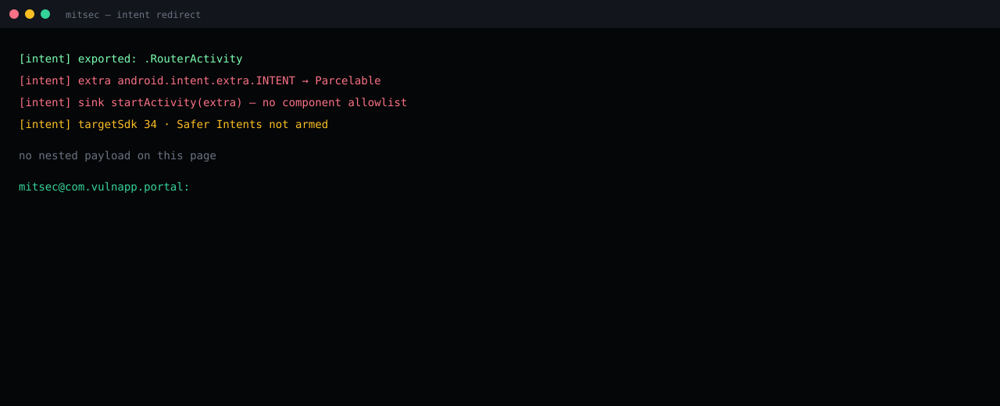

.RouterActivity exported an extra Intent and started it as itself.
Manifest + sink on an authorized lab build. No nested payload published.
getParcelableExtra → startActivity. targetSdk 34. Safer Intents off.
Stop starting foreign Intents. targetSdk 36. Do not call removeLaunchSecurityProtection.
Summary
Lab package com.vulnapp.portal exported .RouterActivity. The activity read a Parcelable extra — the conventional android.intent.extra.INTENT name — and passed that object to startActivity. No component allowlist. No action allowlist. The process identity on the resulting launch is the portal app.
That is Intent redirection. The caller picks the destination. The victim supplies UID, permissions, and any FLAG_GRANT_* the nested object asked for. This page does not ship the nested object.

What AndroScope printed
[intent] exported: .RouterActivity [intent] extra android.intent.extra.INTENT → Parcelable [intent] sink startActivity(extra) — no component allowlist [intent] targetSdk 34 · Safer Intents not armed no nested payload on this page mitsec@com.vulnapp.portal:
Why Android 16 is not a free fix
Safer Intents (API 36) stops a class of embedded-Intent launches when the app targets 36 and the device runs 16. Three ways the class still lives:
- targetSdk 33–35 on a 16 device — old contract.
- The app calls the opt-out that drops the launch protection.
- The router does not embed an Intent object; it rebuilds one from strings. Safer Intents does not parse your business logic.
Impact (class)
Launch of a non-exported activity inside the same package, or a grant-flagged URI into a provider the portal already owns. File theft and auth-flow jumps are chains on top of this sink. The sink is enough to report.
Fix
- Do not start an Intent you did not construct.
- If you must route, allowlist component and action. Drop everything else.
- targetSdk 36. Do not call
removeLaunchSecurityProtection. - Un-export the router if nothing outside the app needs it.